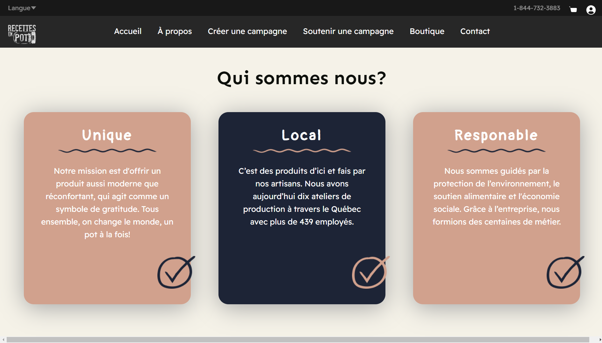
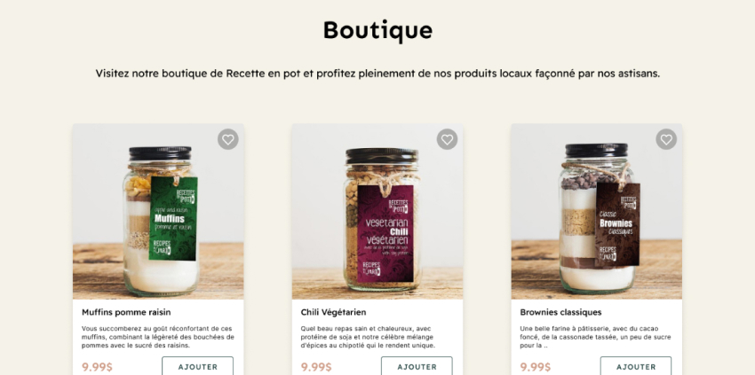
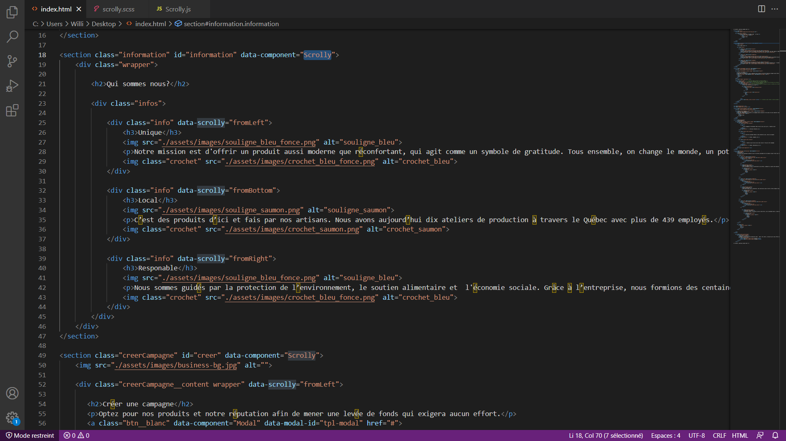
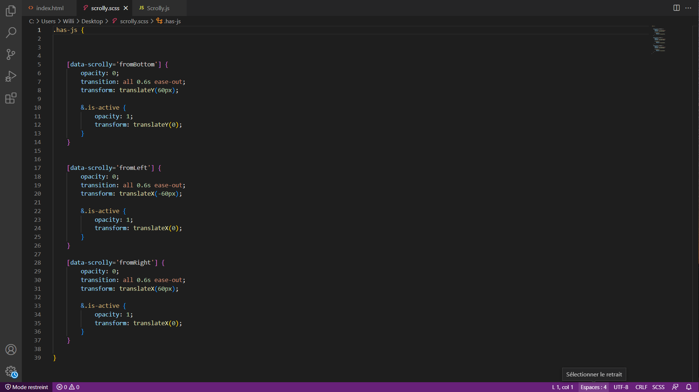
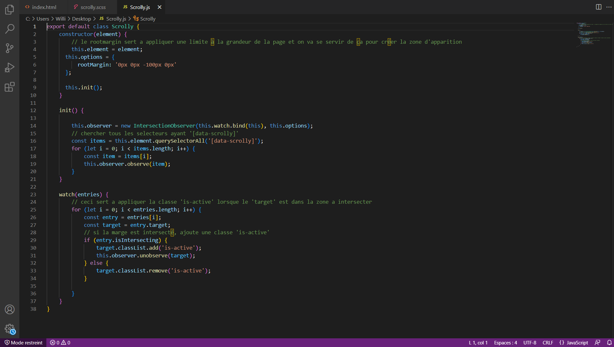

Description
L’objectif était de faire une refonte du site de Recette en pot tout en appliquant les techniques acquises de Design UI/UX. Ensuite, j'ai reproduit une selection de mes maquettes en intégration et programmation web.
Figma est le logiciel dans lequel j'ai mis en valeur la refonte du site de Recette en pot.

Crédit: Recette en pot
Techniques
Les maquettes ont été conçu avec beaucoup de réflexions afin de répondre aux besoins de l’usager.
Elles ont été harmonisée avec les couleurs représentatives de la compagnie Recette en pot.
En programmation, j'ai fait l'usage des composantes en Javascript pour rendre le site interactif et dynamique!

Programmations
Je m’applique à organiser mes codes pour facilité la lisibilité pour autrui et pour moi.
Html
Css
Js
